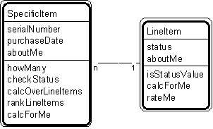

Patt#10. "Specific Item - Line Item" Pattern // transaction patterns

Typical object interactions
- howMany --> calcForMe
- calcOverLineItems --> calcForMe
- rankLineItems --> rateMe
- checkStatus --> isStatusValue
Examples
- specific aircraft - line item; specific vehicle - line item; videotape - rental line item.
Combinations
Patt#6. "Transaction - Transaction Line Item"
Patt#8. "Transaction Line Item - Subsequent Transaction Line Item."
Related strategies:
Str#19. "Select Items and Specific Items" Strategy
Str#55. "Establish Item and Specific Item Attributes" Strategy
Str#77. "Establish Item and Specific Item Object Connections" Strategy
Str#97. "Establish Item & Specific Item Services" Strategy